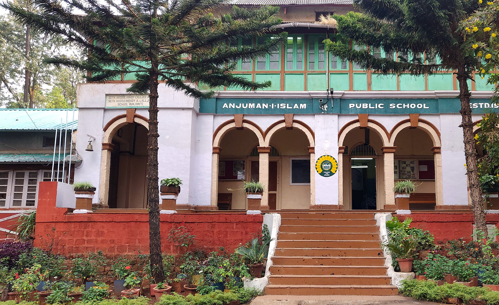
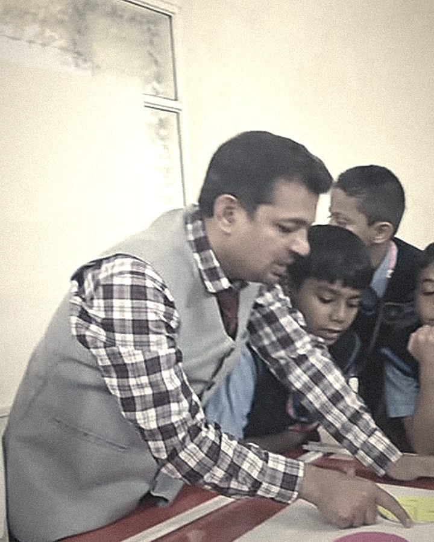
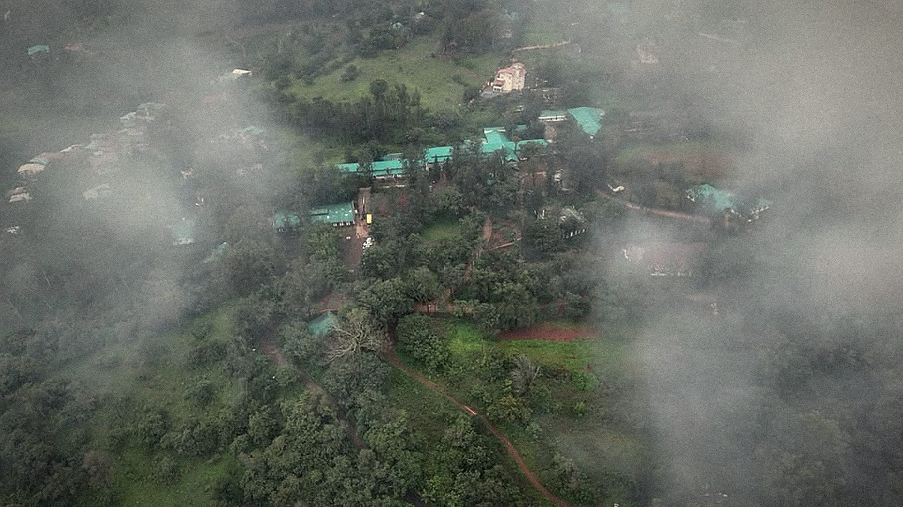
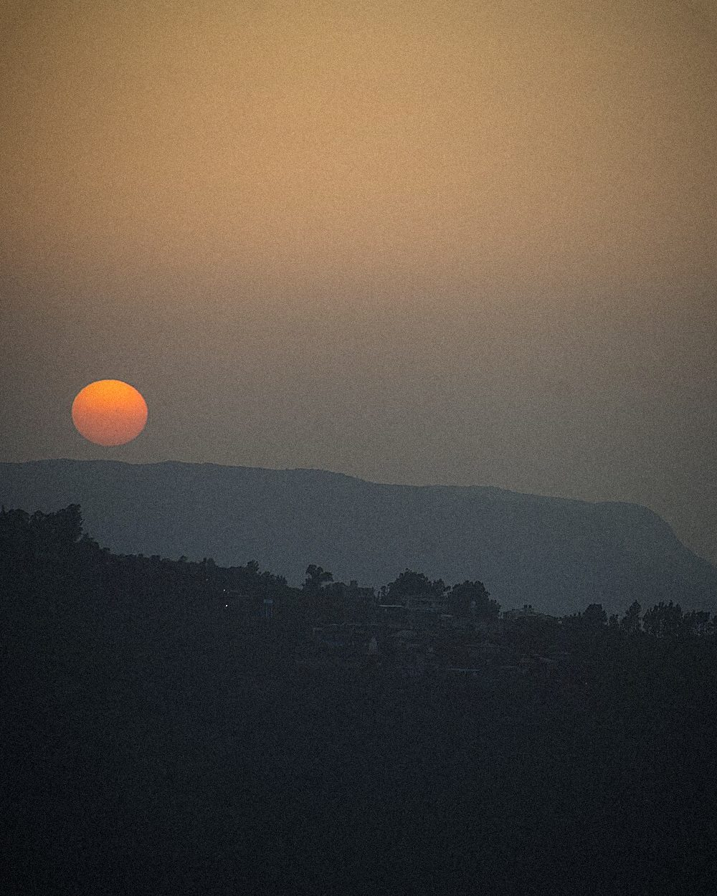
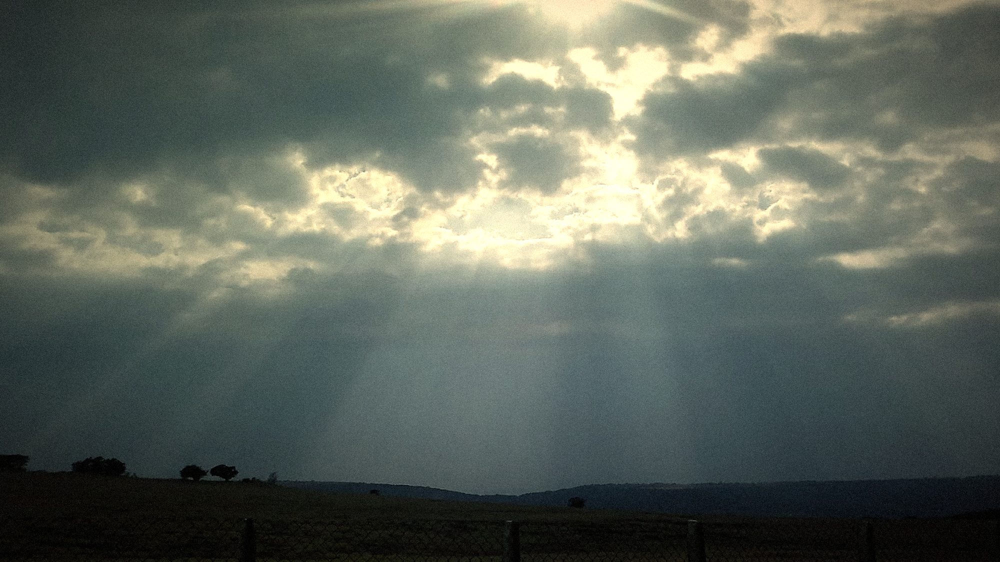
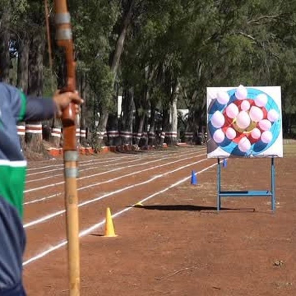
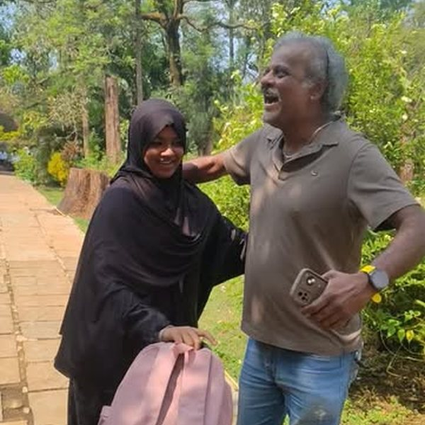

Nandanwan · since 1920
Knowledge is an amanah
Something precious, placed in our hands to be passed on with care. Every child who walks up these steps is a trust from a family, and we teach like it.

Something precious, placed in our hands to be passed on with care. Every child who walks up these steps is a trust from a family, and we teach like it.

Robotics kits, AI, science and computer labs, and Basic Aviation since 2024. Children here don’t just use technology. They take it apart, ask why, and build it again.

A teacher, Anjuman Panchgani · illustrative, real quote to come

Old student · illustrative, real quote to come

For boys and girls, as boarders. Places are limited, and we meet every family in person before we offer one.
A family gives us the most precious thing it has. We repay that trust with an education that treats every hour as valuable: classroom lessons and the Qur’an side by side, a robotics and AI lab that rewards curiosity, and teachers who are mentors and role models.
Enquire now
Portrait to come“Step into a world where education meets compassion, and learning goes beyond the books. Anjuman-I-Islam Public School and Jr. College is a vibrant community where core values and nurturing go hand in hand, creating a supportive environment for every student to thrive. Welcome to your new adventure: a place where lifelong friendship begins and the future is bright.”[Name to confirm]Executive Chairman, Anjuman-I-Islam Public School & Jr. College Read our story
A child here never has to choose between their deen and their ambition, or between the laboratory and the riding school. Five pillars hold the day in balance, and every child stands on all five.
Islamic studies at the heart of the day: five daily prayers in jama‘ah, Qur’an recitation, Hifz on request, and basic Islamic education for every Muslim student.
English-medium, Primary to XII. Digital classrooms, science and robotics labs, and NEET, JEE, CET and NATA coaching alongside the Junior College.
Renovated hostels for boys and girls with a dorm-in-charge, five meals a day on a dietician’s menu, and a trained nurse on campus around the clock.
Horse riding, archery, a shooting range, skating, cricket, football and hockey on the largest ground in town. The body is an amanah, and we train it like one.
Music, drama, pottery, agriculture and basic aviation, debate and community service: the hands and the heart, not only the head.

Teachers use varied methods to reach different ways of learning, academic advisors meet each student regularly to set goals and track progress, and the school reads its own data to find where help is needed. In the dormitories, peer tutors and resident advisors run evening study sessions.
English-medium classes from Primary to Std X. Every classroom has its own projector and AV set-up, and teachers draw on a ready library of e-materials. Students from a vernacular-medium background who find studies hard receive extra coaching.
The Junior College shares the campus, so boarders carry on without changing school. The year follows the board calendar: preliminary exams for Std X and XII in December and January, practicals in February, final exams in March.
Preparation for NEET, JEE, CET, NATA and CA runs alongside the school timetable, in a quiet hill-station setting where wellbeing comes first. Competitive courses carry an additional fee.
Every dormitory has been fully renovated to keep a balance between home and school, so a child feels safe, happy and welcome from the first evening.
Clean, hygienic and spacious dormitories with common areas to relax and socialise after a long day. A dorm-in-charge gives guidance, advice and a listening ear, and the administrative staff keep the campus safe and secure.
A renovated dining hall seats 300 and serves all five meals of the day. The kitchen is supervised throughout, and the menu is set by a dietician so boarders eat well-balanced, wholesome meals on time.
A trained nurse is on campus 24 hours a day and a doctor visits for regular check-ups. The sick bay can keep a child in for rest and care without leaving the campus.
Over 174 acres of campus, activities are treated as part of a rounded education, not a break from it: students here are athletes, artists, musicians and leaders in the making.
The call to prayer is given five times a day in the prayer hall, and Muslim students are expected to offer salah. Basic Islamic education and recitation of the Qur’an are emphasised, and a Hifz course is available on request.
The Akbar Peerbhoy Sports Stadium, the largest ground in town, has separate grounds for football, kabaddi, volleyball and basketball. Boys and girls are coached in cricket, football, hockey, volleyball and athletics, with PT, gymnastics, yoga and archery. A gymnasium and multipurpose hall keep training going through the monsoon.
Drama, quiz, debate, pottery and ceramics, knitting and sewing, and sky gazing, with clubs in robotics, AI, basic aviation, agriculture and gardening. Inter-house contests run through the year, from dramatics and football to cross-country and debate.
Limited seats for the new academic year, Primary to XII.
Music and speeches, presided over by Padma Shri Dr. Zahir Kazi.

Afternoons on the ground, drawing a bow for the first time.

Trunks, hugs and new dorms: the first day of a new term.
One school in Bombay became ninety-seven institutions. Here are the years, at their true distance from each other. Swipe to move from one milestone to the next.
We meet every family before we offer a place, so we can teach from exactly where each child stands. Come and spend a day on the campus first.
Or call +91 82752 04302 · +91 82752 05404